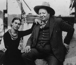

Diego Rivera (1886–1957) 20. yy’ın en önemli Meksikalı sanatçılarındandır. Renkli ve büyük duvar resimleri ile ünlenmiştir. Bu resimler genellikle tarihi temaları konu almaktaydı. Komünist düşünceleri ve ressam Frida Kahlo (1907–1954) ile olan fırtınalı evliliği, Rivera’nın en bilinen yanları arasında yer almaktadır.
Rivera, Orta Meksika’daki Guanajuato’da doğdu. Mexico City ve Avrupa’da sanat eğitimi görmek için burs kazandı. 1909 yılında resim eğitimi almak üzere Paris’e gitti. Sonraki on dört yıl boyunca Fransa ve İspanya’da yaşadı. Bu sırada İtalya’yı da ziyaret etti. Burada kendi duvar resimleri için ilham bulacağı Rönesans dönemi freskleri ile tanıştı.

1921’de memleketine dönen Rivera, ilk büyük duvar resmini iki yıl sonra Mexico City’de yaptı. Aynı yıl Meksika Komünist Partisi’ne katıldı. Rivera’nın duvar resimlerine olan ilgisi onun politik inançları ile de bağlantılıydı. Sokak sanatıyla, müzeleri ve elit kurumları aşarak halkla doğrudan bağlantı kurabileceğine inanıyordu. Meksika hükümetinin duvar resimlerini destekleyen programından da yararlandı. Bu program, 1930’lar Meksikası’nda duvar resmi yapan sanatçıların sayısının artmasına yardımcı odu.
İlk eşinden ayrıldıktan sonra 1929 yılında Kahlo ile evlendi. Ressam çift, birbirlerine pek de sadık sayılmazdı. On yıl sonra ayrılıp 1940 yılında yeniden evlendiler. Her ikisi de sola yakın duruyordu. Sürgündeki Sovyet lideri Leon Troçki’nin (1879–1940) Meksika’ya giriş izni almasına yardımcı oldular.
Rivera’nın duvar resimleri tarihsel ya da sosyal meselelere odaklanıyordu. 1932 ve 1933 yıllarında Detroit’te Amerikan sanayi yaşamının farklı yönlerini yansıtan duvar resimleri çizdi. Bu resimlerin önemli bir bölümü Michigan’daki Dearbon’da bulunan Ford fabrikasından esinlenmişti. (Komünist düşüncelerine rağmen aynı zamanda Rockefeller ailesi için de çalıştı ve San Francisco’daki Borsa Binası’nı boyadı.)
David Alfaro Siqueiros (1896–1974) ve José Clemente Orozco (1883–1949) gibi diğer Meksikalı duvar ressamları üzerinde belirgin bir etkisi oldu. Meksika Duvar Resim Programı, ABD’nin “Works Progress Administration”ı (WPA) için de bir model teşkil etti. Bu kurum, Büyük Buhran sonrasındaki New Deal (Yeni Düzen) politikası kapsamında Amerikalı sanatçılara çeşitli destekler sundu. Bu sanatçıların önemli bir bölümünde de Rivera’nın etkisini görmek mümkündür. Rivera Mexico City’de yetmiş yaşında öldü.
Ek Bilgiler
1- Rivera’nın çocukken ölen Jose Carlos adında bir ikiz erkek kardeşi vardı.
2- 20. yy başlarında Paris, dünya sanatçıları için önemli bir çekim merkeziydi. Rivera, Montparnasse’daki bir apartmanda modernist ressam Piet Mondrian (1872–1944) ile kapı komşusuydu.
3- Rivera, Oscar ödüllü “Frida” (2002) filminde Alfred Molina (1953–) tarafından canlandırılmıştı.